经典搜索算法总结
前言
搜索问题是在解决各类问题时不可避免的重点难点，很多问题的求解过程都可以转变为搜索问题。比如，对于以下罗马尼亚问题，希望找到一条路径使得从城市 Arad 到城市 Bucuresti 的路径最短，这就是一个经典的搜索问题，在数据结构课程中，我们都知道使用 Dijkstra 算法来求得最优解，受《人工智能 一种现代化的方法》这本书的影响，本博客则以此为基石通过更一般的方法来讨论通用的搜索问题的求解思路。
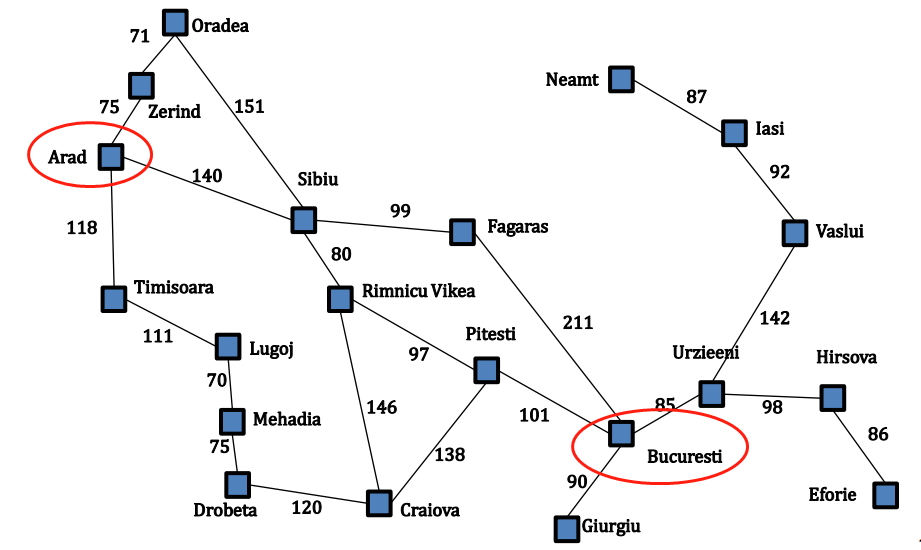
搜索问题的形式化
一个搜索问题可以通过五个元素给出形式化的定义：
- 初始状态。状态用
s表述，初始状态也是状态的一种，上述罗马尼亚问题的初始状态可以描述为 In(Arad) 。 - 可能的行动。行动用
a表述，对于一个特殊状态 s，ACTIONS(s)返回在状态 s 下可以执行的动作集合。例如，在状态 In(Arad) 下可能的行动为： {Go(Sibiu), Go(Timisoara), Go(Zerind)}。 - 转移模型。转移模型用
RESULT(s, a)表述，表示在状态 s 下执行行动 a 后达到的状态。通常也用术语后继状态来表示从一给定状态出发通过单步行动可以到达的状态集合。例如：RESULT(In(Arad), Go(Zerind)) = In(Zerind)。 - 目标测试。确定给定的状态是不是目标状态。在罗马尼亚问题中，目标状态集是一个单元素集合 {In(Bucuresti)} 。
- 路径代价。采用行动 a 从状态 s 走到状态 s’ 所需要的单步代价表述为
c(s,a,s')，路径代价就代表从初始状态到目标状态的单步代价总和。
通过形式化的定义搜索问题，则搜索问题的解描述为一组让初始状态转变为目标状态的行动序列，而搜索问题的最优解描述为使得路径代价最小的一组让初始状态转变为目标状态的行动序列。
树搜索和图搜索
在对问题进行形式化后，需要对问题求解，而一个解就是一个行动序列，所以搜索算法的工作的就是考虑各种可能的行动序列。可能的行动序列从搜索树中根结点的初始状态出发，连线表示行动，结点对应问题的状态空间中的状态。
树搜索算法：
例如在罗马尼亚问题中，从父结点 In(Arad) 出发得到三个子结点：In(Sibiu) ， In(Timisoara) 和 In(Zerind) ，接下来需要继续从这三种子结点中选择其一继续考虑，假设我们选择 In(Sibiu) ，则检查它是否是目标状态，如果不是目标状态，则继续扩展它得到四个状态：In(Arad)，In(Fagaras)，In(Oradea)，In(Rimnicu Vikea) 。继续按此方式拓展 In(Timisoara) 和 In(Zerind) 。如果未找到目标状态，则继续对叶子结点作同样的操作，如下图：
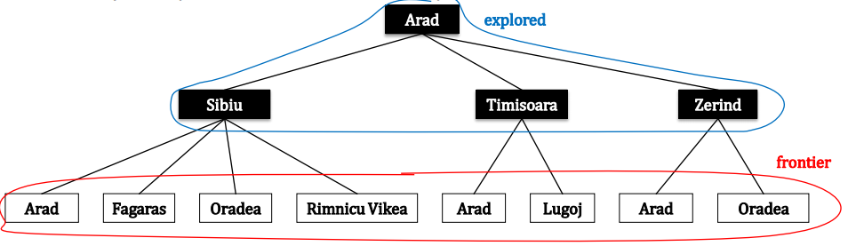
此时引入两个概念：
frontier 结点：frontier 结点是指所有还没有扩展的搜索结点
explored 结点：explored 结点是指所有已经扩展的搜索结点
注意到在拓展 In(Sibiu) 的时候，将 In(Arad) 结点也加入了 frontier 集合，而此时 In(Arad) 结点已经是拓展过的结点，已经加入了 explored 集合。同时在扩展 In(Zerind) 结点的时候，将 In(Oradea) 结点也加入了 frontier 集合，而此时 In(Oradea) 结点本身已经在 frontier 集合中了，这个特别也是树搜索的精髓所在。树搜索的算法伪代码如下：
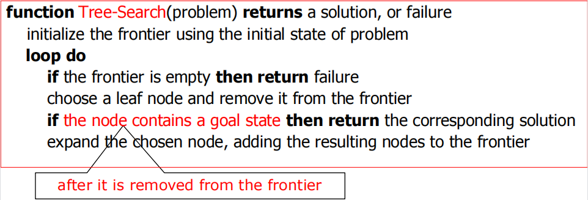
图搜索算法：
对于上述罗马尼亚问题，采用图搜索算法生成的树如下：
在图搜索算法中，在扩展的时候如果遇到已经在 explored 集合中的结点或已经在 frontier 集合中的结点，则不将该结点拓展进 frontier 集合，这也是其与树搜索算法的主要区别。图搜索的算法伪代码如下：
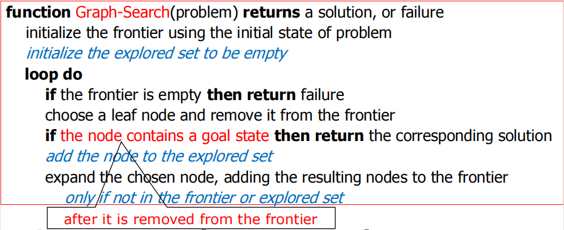
搜索算法的评估
通常一个搜索算法用三个指标来进行评估：
- 完备性：当问题有解时，这个算法是否可以保证找到解？
- 最优性：当问题有解时，这个算法是否可以找到使得路径代价最小的解？
- 复杂性：时空复杂度。
在搜索算法中，是什么决定了搜索策略？
由于搜索算法重复的从 frontier 集合中选择和移除一个结点，并且拓展该结点并且将拓展结点插入到 frontier 集合中。如果每次从 frontier 集合的固定位置选取结点，则搜索策略由结点在 frontier 中的顺序决定。
盲目搜索策略
盲目搜索算法不会考虑结点离目标有多远，除了问题定义中提供的状态信息外没有任何其他附加信息！
宽度优先搜索算法BFS
宽度优先搜索算法（图搜索）的思路就和数据结构中的 BFS 是一个东西。其首先在 frontier 集合中找到最先进入该集合的结点，然后将该结点加入到 explored 集合，同时拓展该节点得到他的每个子结点，对于每个子结点，如果该子结点不在 frontier 集合和 explored 集合中且不是要找到目标结点，则将子结点加入到 frontier 集合中，如此循环直到 frontier 集合为空或者找到目标结点为止。BFS（图搜索）算法伪代码如下：
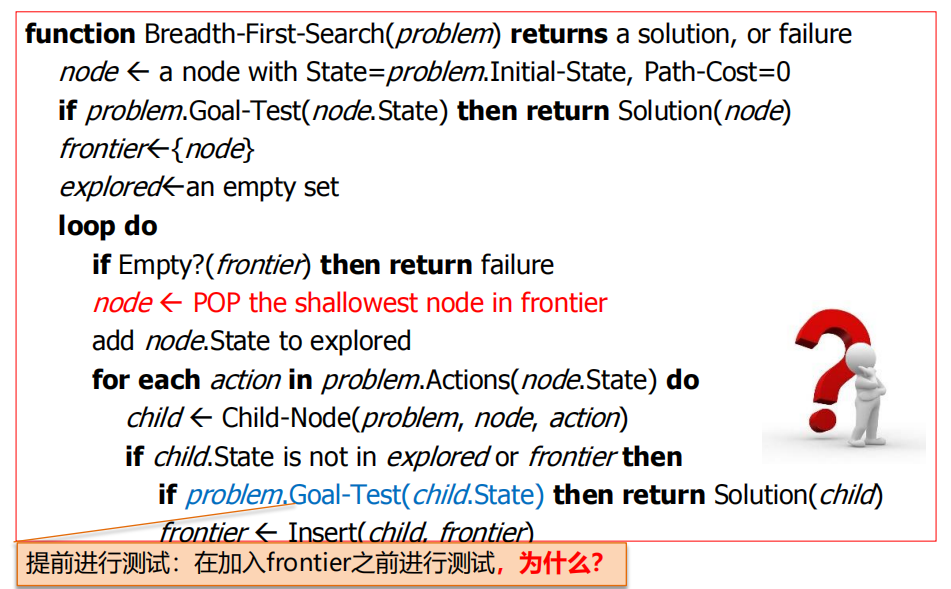
显然提前测试可以减少遍历的结点数，如果等到从 frontier 集合中弹出时再测试，那么需要拓展很多不必要的结点。通过将 frontier 集合设计成队列，采用先进先出的策略则可以实现 BFS。
BFS 算法评估（设分支因子为 b，最浅的目标结点的深度为 d）：
- 完备性：当树的分支因子 b 是有限的，则算法是完备的。
- 最优性：如果路径代价是基于结点深度的非递减函数，则算法是最优的，否则不具备最优性。
- 复杂性：显然时空复杂度均为 O(b^d)。
一致代价搜索算法UCS
一致代价搜索算法（图搜索）的思想就类似于 Dijkstra 算法。其首先在 frontier 集合中找到当前代价最低的结点，判断该结点是否是目标结点，如果是，则返回解，否则将该结点加入到 explored 集合中，然后拓展该结点得到他的每个子结点。对于每个子结点，如果该子结点不在 frontier 集合和 explored 集合中，则将该子结点加入到 frontier 集合中；否则如果该子结点在 frontier 集合中，但是其代价比已经在 frontier 集合中的低，则用新生成的子结点代替原来 frontier 集合的子结点。UCS（图搜索）算法伪代码如下：
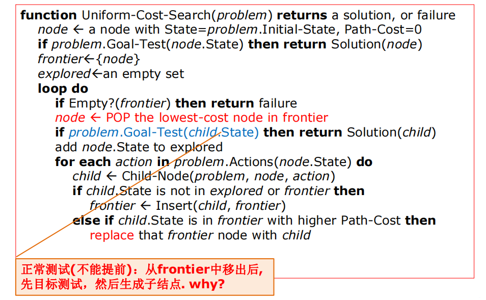
UCS 在结点被拓展时才进行目标检测，这是与 BFS 最大的区别，因为第一次生成的目标的结点可能在次优路径上。通过将 frontier 集合设计成优先级队列，则可以实现 UCS。
UCS 算法评估（设分支因子为 b，某个小的正值 ξ，最优解的代价 C*）：
- 完备性：如果存在零代价的行动则可能陷入死循环，但如果每一步的代价都大于等于 ξ，则算法是完备的。
- 最优性：显然具有最优性。
- 复杂性：时空复杂度均为 O(b^(1+[C*/ξ ])) 。
深度优先搜索算法DFS
深度优先搜索算法（图搜索）的思路类似于数据结构中的DFS。其基本思想是首先在 frontier 集合中找到最后进入该集合的结点，然后将该结点加入到 explored 集合，同时拓展该节点得到他的每个子结点，对于每个子结点，如果该子结点不在 frontier 集合和 explored 集合中且不是要找到目标结点，则将子结点加入到 frontier 集合中，如此循环直到 frontier 集合为空或者找到目标结点为止。DFS 和 BFS 最大的区别在于对 frontier 集合中结点的选取，BFS 中对结点的选取符合先进先出的策略，而 DFS 中对结点的选取则符合先进后出的策略，所以 DFS 可以用栈来实现其 frontier 集合。DFS 算法有一个很重要的特别就是其及其依赖采取的是树搜索还是图搜索，因为树搜索每次都可能会加入重复的结点，这样就会导致在两个重复的结点之间无线循环。
DFS 算法评估（设分支因子为 b，最浅的目标结点的深度为 d，最深的叶子结点为 m）：
- 完备性：对于树搜索，DFS 总是不完备的；而对于图搜索，DFS 在有限状态空间下是完备的，而在无限状态空间下是不完备的。
- 最优性：显然不是最优的
- 复杂性：时间复杂度为 O(b^m)，空间复杂度为 O(bm)，可见其空间复杂度比上述两种搜索小很多，这也是深度优先搜索最大的优势。
深度受限搜索DLS
对于无限状态空间深度优先搜索算法总是会失败，而这个问题可以通过对深搜设定界限 l 来避免，也就是说在深搜的，当深度达到了 l ，则采取舍弃更深结点的策略。其算法可以采用基于递归的方式来实现，算法的伪代码如下：
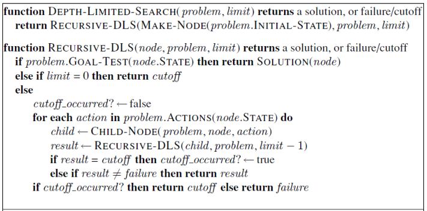
DLS 算法评估（设分支因子为 b，限定的深度为 l，最浅的目标结点的深度为 d）：
- 完备性：显然当
l < d的时候，DLS 则总是不完备的。 - 最优性：即使当
l > d的时候，根据 DFS 算法，DLS 也不是最优的。 - 复杂性：时间复杂度为 O(b^l)，空间复杂度为 O(bl)。
迭代加深搜索IDS
在 DLS 算法中，我们无法选取一个合适的深度 l 来求解，这就是 IDS 的动机，在未找到解之前不断的增加 l ，迭代的使用 DLS 算法，当 l 达到最浅的目标结点的深度 d 时，则可以求出解。其算法伪代码如下：
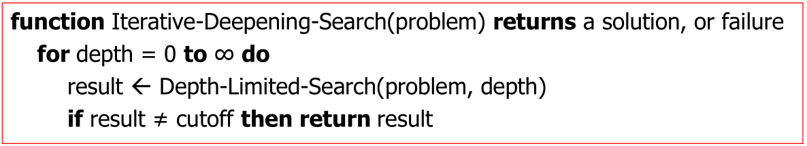
IDS 算法评估（设分支因子为 b，限定的深度为 l，最浅的目标结点的深度为 d）：
- 完备性：当分支因子是有限的的时候，IDS 是完备的
- 最优性：类似于宽度优先搜索算法，如果路径代价是基于结点深度的非递减函数，则算法是最优的。
- 复杂性：时间复杂度为 O(b^d)，空间复杂度为 O(bd)。
双向搜索算法
双向搜索算法思想则是同时运行两个搜索——一个从初始状态向前搜索同时另外一个从目标状态向后搜索——希望他们在中间某个结点相遇，此时搜索停止。理由是，比如两边都采用宽度优先搜索，则显然 b^d/2+b^d/2 要远小于 b^d。
0x4.7 六种搜索算法的对比
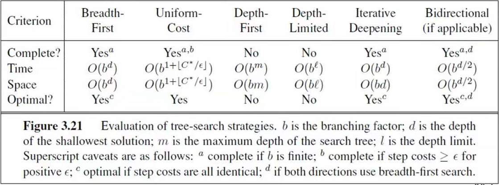
启发式搜索策略
在盲目搜索策略中，往往不考虑结点离目标有多远，也就是说，在搜索的过程中，并不考虑目标的状态对当前搜索行为的影响，而仅仅依赖于当前的状态；比如在罗马尼亚问题中，从城市 Arad 到城市 Bucuresti 的搜索，仅仅只考虑在当前状态下可能导致的代价，该策略虽然能搜索到最优解，但是在搜索过程中可能会有很多不必要的操作，因为搜索的结果只关注那条最优的路径，但是实际在搜索的过程中可能会搜索到与最优路径无关的结点。而启发式搜索策略则不一样，他会考虑目标状态对当前状态的影响，这样做使得在搜索的过程中更大的可能搜索和最优路径相关的状态，减少不必要的搜索，增加搜索的效率，比如说在罗马尼亚问题中，可以在考虑代价的同时，还考虑当前结点离目标结点的直线距离来选取下一个要拓展的结点，而这个直线距离就作为启发式的信息来帮助搜索的决策，以此更快地搜索到最优路径。
在启发式搜索中，通常用 g(n) 表示结点 n 当前的代价，用 h(n) 表示启发函数，一般来说 h(n) = 结点 n 到目标结点的最小代价路径的代价估计值（比如在罗马尼亚问题中可以用 Arad 到 Bucuresti 的直线距离来作为从 Arad 到 Bucuresti 的最小代价路径的代价估计值），用 f(n) 作为选择结点的代价评估值，f(n)=g(n)+h(n) ，当 f(n) 越小，则代表结点越优；启发式搜索对扩展结点的选择同时依赖于 g(n) 和 h(n)，对于 h(n) 较小的结点，我们可以认为该结点会让我们离目标结点更近，所以 h(n) 作为启发式的信息能帮助我们在搜索的时候做出决策。
贪婪最佳优先搜索GBFS
贪婪最佳优先搜索算法试图扩展离目标最近的结点，理由是这样可能可以很快找到解，因此，它只用启发式信息，即 f(n)=h(n)。还是对于上述的罗马尼亚问题，通过 GBFS 算法求解的路径如下，可见该算法并不是最优的。
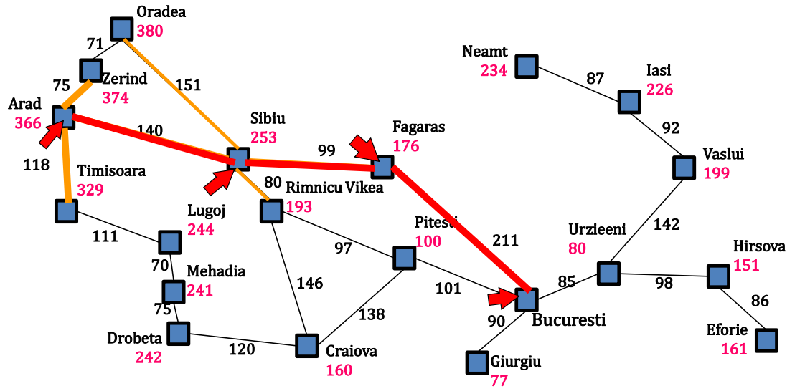
GBFS 算法评估（设分支因子为 b，最深的叶子结点为 m）：
- 完备性：当状态空间是无限的时候，GBFS 是不完备的；当状态空间是有限的，图搜索的 GBFS 算法是完备的，而树搜索的 GBFS 算法是不完备的。
- 最优性：显然不是最优的。
- 复杂性：时间复杂度为 O(b^m)，空间复杂度为 O(b^m)，因为要保存所有的结点在内存中。
A*搜索
在 GBFS 算法中，仅仅采用启发式作为评估值，导致不能求到最优解，A* 搜索算法同时考虑到代价，以期解决 GBFS 算法中的问题，因此 A* 搜索采用的代价评估值 f(n) 为 h(n) 与 g(n) 的和，其算法伪代码的实现如下：
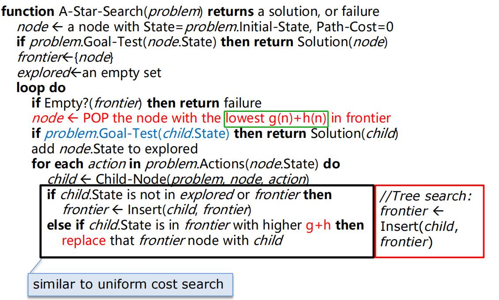
A* 算法一定能找到最优的路径吗？考虑如下的例子：
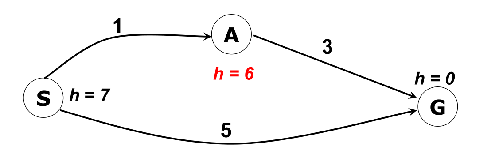
假设从 S 走到 G ，那么在 S 结点扩展后，frontier 里面剩下 A（其代价估计 f(A) 为 7）和 G （其代价估计 f(G) 为 5），那么根据 A* 算法，会从 frontier 里面选取 G，此时得到解，但可以发现在这种情况下显然求到的不是最优解，这是因为在 A 结点出其启发式的值过于高，明显的大于其到 G 结点的真是代价，导致产生不准确的估计，所以我们的思路就是降低 A 结点的 h 到一个合适的值，在此处若 h(A) 比 4 小的话则可以根据 A* 算法求到最有解。此处引入一个新的概念——可采纳性。
- 可采纳性：假设 h*(N) 是从 N 结点到目标结点的最优路径的代价， 当启发式函数 h(N) 满足以下不等式的时候，我们称该 h(N) 是可采纳的 (admissible) ——0 <= h(N) <= h*(N)。
在引入可采纳性后，A* 算法在树搜索和图搜索下都具有最优性吗？同样考虑以下的例子：
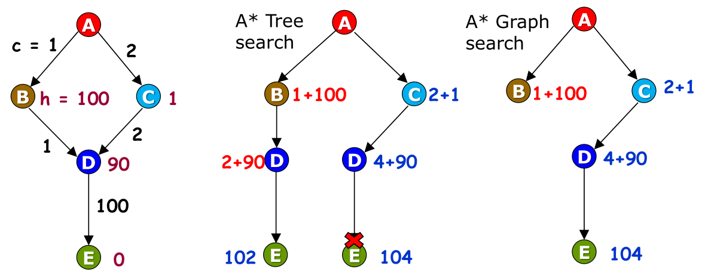
该问题的启发式函数是可采纳的，假设从 A 走到 E，可以发现在树搜索的情况下找到最优解，而在图搜索的情况下却没有找到最优解。这是因为图搜索在遇到已经加入到 explored 集合的结点的时候，会直接不考虑该结点，导致可能不能修正之前扩展带来的错误，比如在上例中，树搜索在扩展右边的 D 结点后，在扩展 B 结点的时候将左边的 D 结点加入到了 frontier 里面，从而有机会修正一开始扩展的右边的 D 结点，使得算法找到最优解；而图搜索由于在第一次扩展 D 结点后，其加入到 explored 结点，导致第二次遇到估计代价更低的 D 结点时，直接将其抛弃而不加入到 frontier 结点，所以会找不到最优解。从这里可以看出，在图搜索算法中，如果结点被加入到了 explored 集合，则算法认为当前在 explored 集合中的路径一定会是最优路径的子路径（类似于 UCS 算法），其实并不是，这就导致无法像树搜索那行修正路径导致无法找到最优解。但是，如果给启发式函数加入比可采纳性更强的约束，会不会使得图搜索也是最优的呢？此处引入一个新的概念——一致性。
- 一致性：如果对于每个结点 N 和通过任一行动 a 生成的 N 的每个后继结点 N’，从结点 N 到达目标的估计代价不大于从 N 到 N’ 的单步代价与从 N’ 到达目标的估计代价之和，我们称启发式函数 h(N) 具有一致性 。即满足不等式 —— h(N) <= c(N, a, N’)+h(N’) 。显然一致性会使得启发式函数更小，也就说一致的启发式函数一定是可采纳的。
当启发式函数满足一致性的时候，则 A* 图搜索算法是最优的。
A* 算法评估（设 C* 是最优解路径的代价值，分支因子为 b，最浅的目标结点的深度为 d）：
- 完备性： A* 算法会扩展所有代价评估值 f(n) 小于 C* 的结点，但不会扩展代价评估值 f(n) 大于 C* 的结点，所以当代价小于等于 C* 的结点是有穷的，则 A* 算法是完备的。
- 最优性：A* 算法的最优性依赖于其是树搜索还是图搜索，启发式函数是否是可采纳的，一致的。如下图：
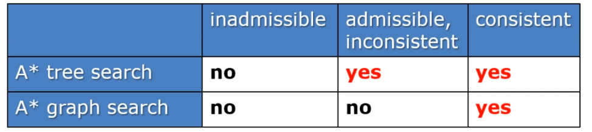 - 复杂性：在所有的可以找到最优解的搜索算法里面，A* 搜索的效率是最高的，因为这些算法里面他们都会扩展所有代价评估值 f(n) 小于 C* 的结点，但是 A* 算法一定不会扩展代价评估值 f(n) 大于 C* 的结点，这样使得 A* 算法访问的结点更少，求解的速度更快。时间复杂度和空间复杂度为 O(b^d^)
由以上讨论可知，A* 算法对于任何给定的一致的启发式函数都是效率最优的，所以设计 A* 算法，最关键的就是设计启发式函数 h(n) 。
既然让启发式函数值更小，会让 A* 算法更可能达到一致性，那是不是启发式函数值越小越好呢？显然不是，对于两个一致的启发式函数 h1 和 h2 ，若 h1(N) > h2(N) ，我们则称 h1 更准确，采用 h1 会使得求解过程更快。也就是说我们期望的启发式函数，是在满足一致性的前提下，越大越好！！具体的设计启发式函数的时候可以从松弛问题出发，也可以从子问题出发，也可以从学习的角度出发，具体细节的在此处就不讨论了（逃），可以参考由我们任课老师翻译的 AI 原理神书 —— 《人工智能 一种现代的方法》！